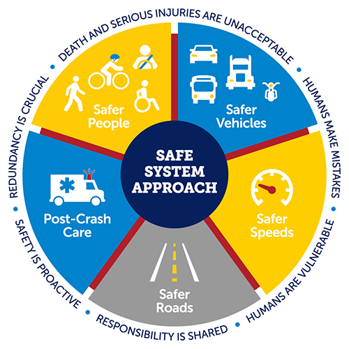
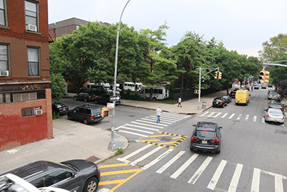
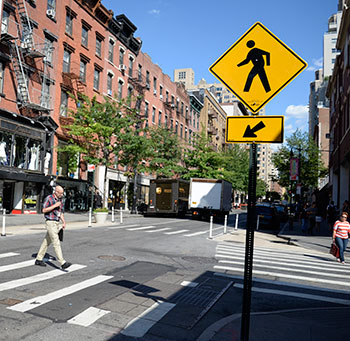

| Descriptions of Assessed Vision Zero Interventions | ||
|---|---|---|
| Intervention | Description | Components/ Examples |
| Citywide Speed Limit Reduction | Default speed limit change from 30 MPH to 25 MPH. | Streets may be signed or unsigned. |
| Enhanced Crossing | A marked high-visibility crosswalk on calm streets with low vehicle volumes, high pedestrian traffic, and no traffic signal or stop sign. | At minimum, include high visibility crosswalk markings, daylighting on all approaches, Americans with Disabilities Act compliant pedestrian ramps, and pedestrian warning signage. |
| Leading Pedestrian Interval Signal | Signals that show a pedestrian walk sign before showing a green light to vehicle traffic in the same direction, giving pedestrians a head start to cross the street before car traffic. | — |
| Neighborhood Slow Zone | Neighborhood areas, selected based on crashes, presence of schools, and other factors, in which the speed limit has been reduced to 20 MPH. | Include road markings and signs indicating entrance to a slow zone, along with greater concentration of other interventions. |
| SIP Corridors | Safety-oriented engineering improvements that use multiple treatments in a street corridor. | Examples: large range of subtypes, including markings, vertical elements, signage and regulatory changes, signal changes, concrete, and landscaping. |
| SIP Intersection | Safety-oriented engineering improvements that use multiple treatments in a single intersection. | Same as above, but within intersections rather than along street corridors. |
| Speed Hump | A raised area of a roadway designed to reduce vehicle speeds. | — |
| Turn Traffic Calming | A traffic calming measure that guides drivers to turn more safely and increases pedestrian visibility. | Examples: hardened centerline, slow turn wedge, bike island channelization, median extension. |
| 25 MPH Signal Retiming | A corridor where the signal progression has been changed to match the 25 MPH speed limit. | — |
Evaluating the Impact of Vision Zero Interventions on Pedestrian Casualties in NYC (2013-2023)
Motor vehicle crashes are a leading cause of death and injury in New York City (NYC). In 2014, the city adopted the Vision Zero (VZ) framework, a comprehensive strategy to eliminate all traffic-related fatalities. The program uses a multi-faceted approach, including infrastructure redesign, lower speed limits, and public awareness campaigns. This analysis evaluates the impact of nine distinct street-level interventions on pedestrian casualties, examining data from 2013 to 2023 and focusing specifically on intersections that received treatments between 2015 and 2021. This approach ensures that every intervention can be evaluated with at least two years of ‘before’ data and two years of ‘after’ data, allowing for a robust comparison.
Key Findings
Speed is Key:
Interventions that physically slow traffic, like Turn Traffic Calming (-27%) and Neighborhood Slow Zones (-21%), were most effective.Give Pedestrians a Head Start:
Leading Pedestrian Interval Signals were associated with a 13% decrease in casualties.Mixed Results:
Other common treatments showed no significant citywide impact on pedestrian safety.

What Are the Vision Zero Interventions?
The analysis focuses on nine key physical and regulatory changes made to NYC streets. The table below provides a brief description of each intervention.


Map of All Vision Zero Interventions & Pedestrian Casualties
The interactive map on the right displays the full Vision Zero history of every intersection in the city. Zoom-in and click on any intersection to see a list of the Vision Zero interventions it has received and the year each was first implemented.
Alternatively, you could switch to the “Pedestrian Casualties” view to see a choropleth map of pedestrian casualty counts across all NYC intersections between 2013 and 2023.